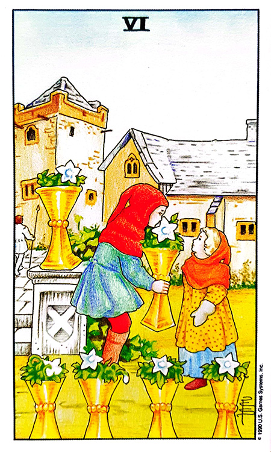
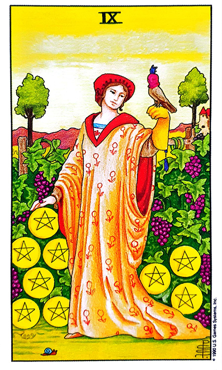

![빈티지색 Vintage 카드]()
REDSUN COLOR TAROT · STUDY NOTES
쉽고 재미있는 레드썬의 컬러타로 — 챕터 18 (246~252쪽)
“ 넌 결코 올드하지 않아 ”표어는 “넌 결코 올드하지 않아”. 246쪽 손글씨 메모: “희생, 특별함” / 키워드 상단 빨간·검정 볼펜: “- 옛것에서 안전이 느껴짐 / 흔들림이 없는 - (역사가 대변해 준다) / - 옛것에 가치와 감성을 더해 찾는 것은 함(함정)”
이 챕터의 표어는 “넌 결코 올드하지 않아”입니다. Vintage는 색채를 지칭하는 색이 아니라 상징적인 의미의 색으로, 옛것에 대한 향수와 회귀, 그리고 재회·재발견이라는 독특한 축을 담당합니다.
Vintage 컬러는 색채를 지칭하는 색이 아니고 상징적인 의미의 색입니다.
‘빈티지’라는 용어는 고대 프랑스어 ‘Vendage’에서 유래했는데, 이 단어는 포도 수확을 의미하는 라틴어 ‘Vindemia’에 뿌리를 두고 있습니다.
‘빈티지(Vintage)’란 원래 ‘와인의 원료가 되는 포도를 수확하고 와인을 만든 해’를 의미합니다.
Vintage 컬러는 옛것에 대한 향수와 회귀함을 나타냅니다 (형광펜).
빈티지란 그것에 담겨 있는 그 시대의 역사와 문화를 소유한다는 의미이며, 빈티지 역사성을 지닌다는 것은 희귀성으로 더욱 가치를 발휘하여 자신만의 존재감을 드러내는 것입니다.
Vintage 컬러는 익숙함에서 편안함을 주는 컬러입니다 (형광펜). 너 나 할 것 없이 획일화되어 가는 현대사회에서 옛것의 고귀함을 재발견하고 (형광펜) 오히려 더 가치 있게 구성하는 것이라 할 수 있습니다.
Vintage 컬러는 오래되었다는 것은 얼핏 보면 Old Copper 컬러와 비슷하지만, 그 의미는 다릅니다.
| 비교 | Old Copper (고동색) | Vintage (빈티지색) |
|---|---|---|
| 시간의 성질 | 오랜 기간 계속 연관성을 가지고 힘들게 고생 | 예전에 있었던 인연·마음에 품고 있던 것을 잊고 있었다가 |
| 과정 | 그 과정 속에서 끝이 나는 경우도 많음 | 어떠한 계기로 다시 인연이 맺어지거나 내재된 것을 이제 하게 됨 |
| 결과 | 이겨내면 커다란 결과 / 못 버티면 포기 | 다른 것과 비교할 수 없는 자신만의 감성적 특별함 · 오래 꿈꿔 왔던 것을 하게 되기에 오히려 더 빛남 |
| 핵심 축 | 인내 · 버티기 | 재회 · 재발견 · 희소성 |
— 같은 갈색 계열이지만 Old Copper = “고생 끝 큰 결과”, Vintage = “잊고 있던 것의 재발견”으로 리딩 방향이 완전히 다릅니다.
| # | 성격 특징 |
|---|---|
| 1 | 나이에 비해 성숙한 사람입니다. |
| 2 | 볼수록 편안하며 매력적인 사람입니다. |
| 3 | 진실한 사람이며 가식이 없습니다. |
| 4 | 다른 사람 말에 흔들리지 않는 소신 있는 사람입니다. |
| 5 | 특별한 취미 생활을 좋아합니다. |
| 6 | 다소 고집이 센 사람입니다. |
| 7 | 술을 좋아할 수 있으며 의리가 있습니다. |
| 8 | 모두가 YES라고 할 때 NO라고 할 수 있는 사람입니다. |
| 9 | 많은 사람과 어울리기보다는 혼자 있는 것을 좋아할 수 있습니다. |
| 10 | 사물이나 사람을 관찰하는 능력이 있습니다. |
| 11 | 어려움이 있어도 참고 이겨내며 끈기가 있고 인내력이 있습니다. |
“넌 결코 올드하지 않아” — 성숙·매력·진실·소신·관찰력·인내·의리의 깊은 면과, 고집·혼자 있기 선호·술의 개인적 면이 공존합니다. “모두가 YES 할 때 NO라 말할 수 있는 사람”이 이 컬러의 가장 상징적인 문장입니다.
연애운에서 빈티지는 예전에 알던 사람을 다시 만나거나, 예전의 마음속에 품고 있었던 사람을 만나 연애를 하고 있을 때 자주 등장합니다.
| 카드 조합 | 핵심 한 줄 | 상세 해석 |
|---|---|---|
 VI of CUPS (컵 6) + Vintage |
재회 · 첫 만남으로 돌아가고 싶은 마음 | 부정적인 카드들과의 배열이라면 처음 만났을 때로 돌아가고 싶을 때 나올 수 있습니다. 처음 연애할 때의 모습으로 돌아가고 싶다는 건 지금은 그렇지 않다는 뜻이기도 합니다. 또 두 사람을 힘들게 했던 문제들이 사라지고 좋아질 때 나오기도 합니다. |
| 애인 질문 + Vintage | 예전에 알던 사람을 다시 만남 | “애인을 만날 수 있을까요?” 질문이라면 예전에 알던 사람을 다시 만나거나, 예전에 마음속에 품고 있었던 사람을 만나게 되는 경우입니다. |
| 카드 조합 | 핵심 한 줄 | 상세 해석 |
|---|---|---|
 IX of PENTACLES (펜타클 9) + Vintage |
만족 · 숨겨둔 돈·묵힌 투자 회수 | 현재의 금전 상태는 크게 부유하지도 가난하지도 않고 본인은 어느 정도 만족해하고 있습니다. 가족이나 다른 사람을 몰래 빌려주었던 돈을 돌려받는 다거나, 숨겨두었던 비상금을 찾을 수 있습니다. 오래전 투자했던 부동산이나 주식이 그동안은 큰 이득이 없었으나 이제 그 값어치가 올라가고 있습니다. 예전에 했던 일이나 하고 싶었던 금전 활동을 하게 되는 경우일 수 있습니다. |
| 카드 조합 | 핵심 한 줄 | 상세 해석 |
|---|---|---|
| 긍정 타로 + Vintage (매매운) |
예전부터 원하던 물건 · 가치 상승 | 매매에서 빈티지는 예전부터 사고 싶었던 집이나 물건을 사게 되는 경우이거나, 빈티지 속성의 물건이나 상품을 거래할 때 등장합니다. 매입자·매수자는 만족스러운 매매 거래가 가능하고, 이 물건은 시간이 지나면 더욱 가치가 높아질 수 있습니다. |
| 부정 타로 + Vintage (매매운) |
거래 성사 안 됨 | 부정적인 유니버셜 타로와 나왔다면 거래가 이루어지지 않습니다. |
| Vintage (합격운) |
재도전 · 유니 타로가 결정 | 합격운이라면 예전에 한 번 떨어졌던 시험을 다시 볼 때 나올 수 있습니다. 또는 예전부터 하고 싶었던 시험을 보거나 마음속에 품고 있던 학교에 가고자 할 때 등장하는데, 유니버셜 타로에 따라 합격 여부가 결정됩니다. |
예전부터 하고 싶었던 사업을 하고 싶거나 하게 될 때 빈티지가 등장할 수 있습니다. 희소성이 있는 아이템으로 빈티지 관련 사업일 수 있습니다.
빈티지는 진로 적성에서 희소성이 있거나 전통적인 특성이 있습니다.
| 항목 | 내용 |
|---|---|
| 주의 질환 리스트 | 오래전에 앓았던 병의 재발 · 음주로 인한 질병이나 사고 |
| 해석 포인트 | ‘재회·재발견’이라는 컬러 특성이 건강에서도 반복 — 과거 병력이 다시 돌아오는 재발을 주의. 술(알콜)이 키워드인 컬러답게 음주 관련 질병·사고가 특징적입니다. |
| # | 룰 | 내용 |
|---|---|---|
| 1 | 재회 · 재발견 | 예전 인연·마음에 품고 있던 것을 다시 만나고 다시 하게 되는 색 · 연애·매매·합격 모두 “예전”이 키워드. |
| 2 | Vintage ≠ Old Copper | Old Copper=고생 끝 큰 결과 / Vintage=잊고 있던 것의 재발견, 감성적 특별함. |
| 3 | 역사가 대변하는 가치 | 희소성·고유성·중후함 · 낡아서 닳은 게 아니라 낡아서 세련됨 · Oldies-but-goodies. |
| 4 | 동반 타로가 길흉 결정 | 매매·합격·사업의 구체적 성사 여부는 유니버셜 타로에 따라 결정 — Vintage 자체는 긍정적. |
| 5 | 알콜·재발 주의 | 술이 키워드 · 건강은 과거 병의 재발·음주 질병/사고에 주의. |
| 섹션 | 핵심 명제 |
|---|---|
| 기본 | “넌 결코 올드하지 않아” · 키워드 14 — 성숙된·낡고 오래된·유행·촌스럽·편안함·빛이 바랜·알콜·희소성·특별함·재회·재발견·고급스러움. |
| 유래 | 색채가 아니라 상징의 색 · 프랑스어 Vendage → 라틴어 Vindemia(포도 수확) · 와인을 만든 해 · 기후 따라 맛·가격 달라짐 · 건축·가구·패션의 빈티지. |
| 옛것에 대한 향수 | 역사의 소유 = 희귀성 = 존재감 · 익숙함에서 오는 편안함 · Oldies-but-goodies / New-old-fashioned · 장인 기술의 희소성 · 자연스러운 중후함. |
| Vintage vs Old Copper | OC=오랜 고생·버티기·큰 결과 / V=잊고 있던 인연의 재회·감성적 특별함·오히려 더 빛남. |
| 성격 | 성숙·매력·진실·소신·관찰력·인내·의리·술 vs 고집·혼자 선호 · “모두가 YES 할 때 NO라 말하는 사람”. |
| 연애 | 컵6+V=재회·첫 만남으로 돌아가고 싶은 마음(부정 배열)·힘들게 한 문제가 사라지고 좋아질 때 / 애인 질문=예전에 알던 사람을 다시 만남. |
| 금전·매매·합격 | 펜타클9+V=만족·숨겨둔 돈 회수·묵힌 투자 가치 상승 / 매매=예전부터 원하던 집·물건, 시간 지나면 더 가치↑ / 합격=재수·재도전, 유니 타로가 결정. |
| 사업·진로·건강 | 사업=예전부터 하고 싶었던 사업·희소 아이템·초기 좋았다가 힘들었다가 다시 좋아짐 / 진로=도자기·한복·국악·주류·바텐더·병아리 감별사 / 건강=과거 병의 재발·음주 질병/사고. |